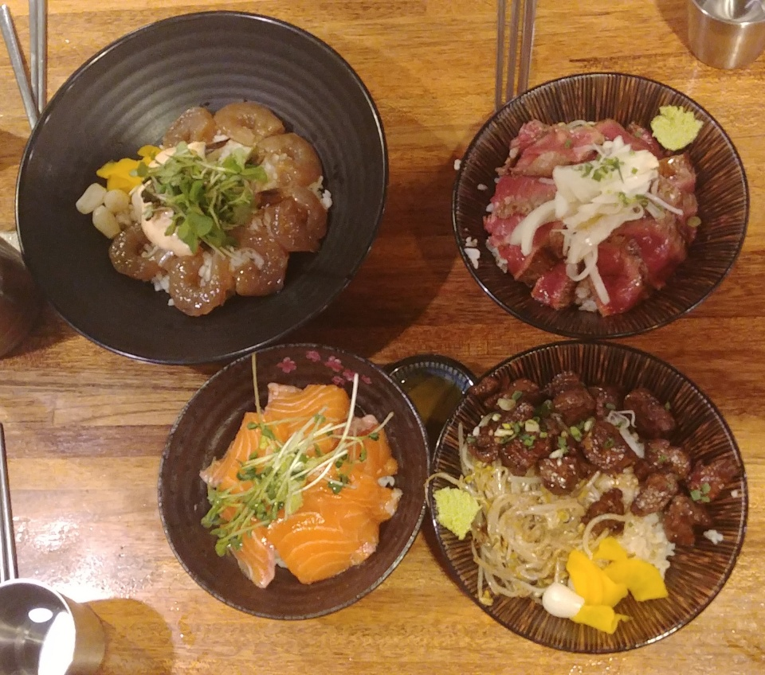

홍대
홍대개미
친구3명과 저녁타임에 갔었다.층이2개로 나눠져있고 테이블도 다닥다닥 붙어 있으나
사람이 많아 10~15분정도 대기를 해야 할정도로 사람이 많았다.
간장새우,스테이크,연어,큐브스테이크중 내가 시킨것은 큐브스테이크였다.
스테이크 덮밥은 살짝이라도 덜 익을경우 병원신세를 면치못할거라 생각해
큐브스테이크를 시켰던것인데 친구의 스테이크덮밥이 가장 맛이 있었다.
새우덮밥-간장새우는 좋았지만 마요네즈가 많이 들어있어 내입맛에 안 맞았다.
스테이크덮밥-육즙팡팡나오는 적당한굽기,올라간 양파가 잘 어울렸다.
연어덮밥-연어가 크게 썰려있어 씹는 식감은 좋으나 과하게 커서 입이작은 사람들은
연어한점에 밥한숟갈 번갈아가며 먹을 정도였다.밸런스를 맞추지 못해 밥이 남았다.
큐브스테이크덮밥-웰던을 좋아한다면 스테이크덮밥보다 이것을 추천한다.
하지만, 소스맛이 생각보다 강해 고기의 맛을 즐긴순 없다.
제임스치즈등갈비
한번에 여러 가지 음식을 남는 저 특이한 불판이 맘에들어 갔었다.
등갈비는 먹을만 했지만 같이 나온 치즈는 조금 실망이었다.
치즈등갈비여서 맛있고 양많은 치즈를 기대했는데 양은 넉넉하나 치즈의 질은 그닥
좋지 못했다.치즈라면 환장하는 내가 치즈를 남겼으니 말 다했다.
서울에만 점포가 5개라 다른 호점은 다를 수도 있으니 후기보고 가는것을 추천한다.
여우골
내인생 최고의 초밥이 있었는데 이가게를 가고 순위가 바뀌었다.
우선 밥이 다른 곳과 차별화되어 있었다.단촛물은 물론이고 입안에 들어가면 밥알이
바로 풀리는데 젓가락질하기 힘들정도로 밥알이 잘 풀린다.
나는 다른것도 다 좋지만 특선초밥을 꼭 먹어보길 추천한다.
첫째는 엔가와라는 광어의 특수부위 때문이고 둘째는 장어초밥때문이다.
엔가와는 일반 광어살과 다르게 광어의 지느러미살로 특수부위에 속하고 씹히는
식감이 매우 좋다.광어는 입에 넣고 한번다물면 바로 사르르 사라져 버릴정도로
부드럽다.옆에 있는 간장새우장은 어머니와 남동생과 방문했던날 5접시를 시켜서
먹어서 서비스로 주신건데 짜지않고 밥반찬하기에 딱 좋았다.따로 반찬처럼 집에서
먹도록 파시기도 한다.다음에는 저걸 포장해 오는게 목표다.
프리츠페페
감자튀김가게인데 소스가 일을 다했다고 들어서 궁금해서 가봤었다.
소스는 갈릭바질마요와 체다치즈를 골랐고 음료는 아이스티를 시켰다.
소스는 감자튀김과 아주 잘 어울렸다.다음번에는 꿀이 들어간소스를 고를것이다.
단짠단짠이 아주 조화로울것 같기때문이다.
아이스티는 일반적인 아이스티가 아닌 살짝탄산이 가미되 더 잘어울렸다.
대학거리의 감자튀김집이라해서 호프집일거라 생각할 수 있는데 그냥 딱 감자튀김집
이다.한칸짜리 작은 가게라 홀이 없어 모두 테이크아웃이다.
피오니
딸기케이크로 유명한 이 가게에는 딸기빙수 또한 유명하다.
얼음이 수북히 쌓인 그릇과 설탕에 잰 딸기가 담긴 그릇이 나오는데 조금씩 떠 같이
먹으면된다.마지막엔 남은시럽과 딸기를 얼음에 부어 먹었는데 달달했다.
원래 얼음도 연유를 섞어 만든것이라 은은하게 달달함이 깔려있는데
설탕에 잰 딸기가 다른재료들이 하나 필요없게 만들어준다.
쇼콜라윰
중학교때 처음 알게되고 홍대가면 무조건 집가기전에 들리는 필수코스가 되었다.
기본적인 빵,쿠키뿐만 아니라 푸딩,초콜릿같은 보기 힘든것도 있어서 좋다.
이곳에 쿠키는 초콜릿으로 아이싱된 예쁜 쿠키들도 있는데 나는 항상 기본쿠키
두봉씩은 꼭 사온다.집에서 우유랑 같이 먹으면 환상의 짝꿍이다.